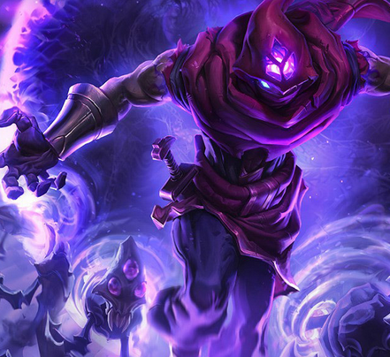
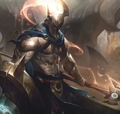
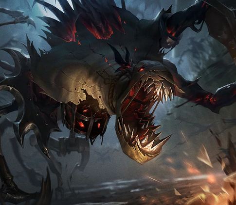
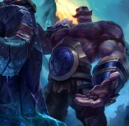

LORE DE LEAGUE OF LEGENDS
REGIONES LEAGUE OF LEGENDS

AGUAS ESTANCADAS
Aguas Estancadas es una ciudad portuaria muy particular enclavada en el archipiélago de las Islas de la Llama Azul. Alberga cazadores de serpientes, bandas portuarias y contrabandistas de todas partes del mundo.
Aquí se puede hacer una fortuna en un instante, y los sueños de cualquiera pueden quedar hechos añicos con la misma rapidez. Para quienes huyen de la justicia, las deudas o son perseguidos, Aguas Estancadas es una ciudad para comenzar de nuevo.
CIUDAD BANDLE

Hay muchas opiniones contradictorias sobre dónde se sitúa el hogar de los yordles, aunque son solo unos pocos mortales los que aseguran haber cruzado los senderos invisibles que conducen a una tierra de un misticismo peculiar más allá del reino material. Se habla de un lugar donde la magia es libre, donde los imprudentes pueden ser tentados por una miríada de maravillas, y quedar atrapados en un sueño...
Se dice que en Ciudad de Bandle las sensaciones son más vívidas para quienes no son yordles. Los colores son más brillantes. La comida y la bebida intoxican los sentidos durante años y, una vez probadas, son imposibles de olvidar.

DEMACIA
Demacia es un reino poderoso y honesto con una prestigiosa historia militar, y su gente siempre ha valorado profundamente los ideales de justicia, honor y deber, que coexisten con un feroz orgullo patriota.
A pesar de sus principios nobles, esta nación autosuficiente se ha ido aislando cada vez más con el paso de los siglos. La capital, la Gran ciudad de Demacia, se fundó para servir como refugio de la magia tras la pesadilla que supusieron las Guerras Rúnicas y se blindó con petricita, un tipo de piedra blanca muy inusual que absorbe la energía mágica.
EL VACIO

Comenzando a gritos su existencia junto al nacimiento del universo, el Vacío es una manifestación de la nada incognoscible que habita más allá. Es una fuerza de hambre insaciable que espera durante eones hasta que sus maestros, los misteriosos Vigilantes, marquen el momento de la destrucción definitiva.
Ser un mortal tocado por este poder es sufrir un atisbo agónico de la irrealidad eterna, suficiente para minar incluso la mente más fuerte. Los habitantes del reino del Vacío son criaturas, a menudo con una sensibilidad limitada, pero con un objetivo singular: conducir a Runaterra a su desaparición total.

FRELJORD
Freljord es un lugar duro e implacable en el que la gente nace lista para luchar por la supervivencia contra todo pronóstico.
Las tribus de Freljord hacen gala de un orgullo y una independencia feroces, aunque sus vecinos de Valoran suelen considerarlos salvajes, brutos e incluso primitivos, dado que desconocen las tradiciones ancestrales que los moldearon. Hace miles de años, la alianza entre las hermanas Avarosa, Serylda y Lissandra se deshizo en una guerra que amenazó la existencia de toda Runaterra y sumió las islas del norte en un invierno incesante y caótico. Ahora solo los mortales más extraordinarios que parecen inmunes a los estragos del fuego o del hielo parecen destinados a guiar al resto, o al menos capaces.
ISLAS DE LA SOMBRA

Hubo una época en la que estas tierras acogieron a una civilización noble y cultivada conocida por sus aliados y emisarios como las Islas Bendecidas. Sin embargo, hace más de mil años, un cataclismo mágico sin precedentes hizo añicos la barrera que protegía el reino material del espiritual y lo convirtió en uno solo... lo que condenó a todos los seres vivos al instante.
En la actualidad, una Niebla Negra funesta envuelve las islas, y la tierra está contaminada por la magia negra. Los mortales que osan adentrarse en las lúgubres orillas sienten que su energía vital se les escapa, algo que atrae a los espíritus insaciables e incesantes de los muertos.

IXTAL
Famosa por su domino de la magia elemental, Ixtal fue una de las primeras naciones independientes en unirse al imperio de Shurima. En realidad, la cultura de Ixtal es mucho más antigua, pues formó parte de la gran diáspora occidental a partir de la cual se alzaron numerosas civilizaciones, entre las que figuran los Buhru, la magnífica ciudad de Helia y los ascetas de Targon. También se considera que desempeñó un papel importante en la creación de los primeros Ascendidos.
Los magos de Ixtal sobrevivieron al Vacío y, más adelante, a los Oscuros. Con ese fin, se distanciaron de sus vecinos y se refugiaron en el abrigo de las tierras salvajes que los rodeaban. Mucho se había perdido, pero estaban decididos a proteger lo poco que habían conseguido conservar.
JONIA

Jonia, rodeada por traicioneros mares, está formada por una serie de provincias aliadas desperdigadas a lo largo y ancho de un inmenso archipiélago que muchos conocen como las Tierras Primigenias. El equilibrio es una de las piedras angulares de la cultura jonia, por lo que los límites que separan el mundo material del espiritual son aquí más difusos que en el resto de Runaterra, especialmente en las profundidades de sus bosques y lo alto de sus cumbres.
A pesar de que la magia del lugar es caprichosa y sus habitantes, místicos y peligrosos, Jonia prosperó durante siglos. Los monasterios de guerreros y las milicias provinciales, así como la propia naturaleza, eran suficiente defensa frente al mundo exterior.

NOXUS
Noxus es un poderoso imperio con una reputación aterradora. Para quienes no se encuentran en el interior de sus fronteras, Noxus es una civilización amenazante cuya expansión no se detiene. Quienes miran más allá de su exterior militarizado descubren una sociedad sorprendentemente inclusiva que respeta y cultiva la fuerza y el talento de sus habitantes.
Los Noxii fueron unas tribus bárbaras temibles hasta que invadieron la ciudad ancestral que hoy en día es el corazón de sus dominios. Amenazados por todos los bandos, decidieron llevar la lucha a terreno enemigo, y cada año sus fronteras avanzan más y más. Esta lucha por la supervivencia ha convertido a los noxianos actuales en personas orgullosas que valoran la fuerza por encima de todo lo demás, aunque la fuerza se puede manifestar de formas muy distintas.
PILTOVER

Piltover es una ciudad progresista, con un poder e influencia en auge. Es el centro cultural de Valoran y el arte, la artesanía, el comercio y la innovación siempre van de la mano. Su poder no es de carácter militar, sino comercial y emprendedor. Situado en los acantilados que lo separan de Zaun por el océano, Piltover acoge a flotas enteras de barcos mercantiles que cruzan las gigantes puertas marítimas para traer bienes provenientes del resto del mundo. Esta riqueza ha provocado un crecimiento sin precedentes en la ciudad. Piltover se ha ido convirtiendo en una ciudad en la que se puede hacer una fortuna y vivir un sueño. Los clanes mercantiles aportan los fondos necesarios para desarrollar las empresas más increíbles: desde enormes locuras artísticas a investigación esotérica hextech, pasando por monumentos arquitectónicos en honor a su poder. Con cada vez más inventores indagando en el mundo hextech, Piltover se ha convertido en un imán para los artesanos más habilidosos de todo el mundo.

SHURIMA
El imperio de Shurima fue una próspera civilización que recubría todo un continente. Los poderosos dioses guerreros de la Hueste Ascendida fueron los encargados de fraguarlo, y reunían a las poblaciones dispares del sur obligándolas a convivir en paz.
Muy pocos osaron rebelarse. Los que lo hicieron, como la nación maldita de Icathia, fueron aniquilados sin piedad alguna.
Sin embargo, tras varios miles de años de desarrollo y prosperidad, la fallida Ascensión del último emperador de Shurima hizo que la capital se derrumbara, y las historias sobre el antiguo prestigio del imperio pasaron a considerarse poco más que un mito. Hoy en día, la mayoría de los habitantes nómadas de los desiertos de Shurima se buscan la vida precariamente en la tierra inmisericorde.
TARGON

El monte Targon es el mayor pico de Runaterra, una montaña de roca erosionada por el sol entre un grupo de montañas que sobrepasan en altura a todos los demás accidentes geográficos del planeta. Lejos de la civilización, la ubicación del monte Targon es remota e imposible de encontrar para todos salvo para los buscadores con más determinación. Son muchas las leyendas relacionadas con el monte Targon y, como tal, es un faro para los soñadores, los locos y los aventureros. Son muchas las almas valientes que intentan realizar el imposible ascenso, algunos buscando sabiduría, otros la gloria, o incluso satisfacer el deseo de llegar a la cima. El ascenso roza lo imposible, y las pocas personas que en algún momento de la historia han alcanzado la cima prácticamente nunca hablan sobre lo que han visto.

ZAUN
Zaun es un distrito suburbano que yace en los valles y cañones que conectan con Piltover. La poca luz que llega lo hace filtrada a través del humo generado en una maraña de tuberías, pues Zaun destaca por su arquitectura gris e industrial. En el pasado Zaun y Piltover estaban unidos. A pesar de que ahora están separadas, ambas sociedades mantienen una relación simbiótica. Zaun vive en un constante crepúsculo de niebla y humo, pero sus gentes continúan desarrollando su dinámica cultura. La riqueza de Piltover ha permitido que Zaun se desarrolle por efecto tándem, un espejo oscuro de la ciudad de las alturas. Muchos de los recursos que llegan a Piltover lo hacen desde los mercados negros de Zaun, y los inventores hextech a quienes la ciudad de Piltover les pone demasiadas restricciones en su investigación, Zaun suele darles la bienvenida.
LORE CHAMPS LOL
K'SANTE
K'Sante, un guerrero desafiante y valiente, lucha contra gigantescas bestias y despiadados Ascendidos para proteger su hogar, Nazumah, un codiciado oasis ubicado entre las dunas shurimanas.
Después de cortar lazos con su pareja, K'Sante se percata de que, para convertirse en un guerrero digno de liderar su ciudad, debe calmar su tesón y apaciguar su egoísta búsqueda del éxito. Solo entonces podrá evitar ser presa de su propio orgullo y encontrar la sabiduría que necesita para derrotar a los viles monstruos que amenazan a su pueblo

NUNU Y WILLUMP
Había una vez un niño que quería acabar con un temible monstruo para demostrar que era un héroe, pero que terminó descubriendo que la bestia, un yeti solitario y mágico, solo necesitaba un amigo.
Ahora Nunu y Willump, unidos por un poder ancestral y por el amor hacia las bolas de nieve, deambulan por todo Freljord dándole vida a aventuras imaginarias. Y mantienen la esperanza de que ahí fuera, en algún lugar, se encuentra la madre de Nunu, y que darán con ella. Si logran salvarla, puede que se conviertan en los héroes que siempre desearon ser.

ESTAS SON LAS 10 RAZAS MAS COMUNES DE LEAGUE OF LEGENDS
HUMANO

Ubicuos en todas las regiones de Runeterra, con una amplia variedad de campeones como Lux, Darius y Jinx.
YORDLES

Criaturas pequeñas, mágicas y a menudo traviesas, representadas por campeones como Teemo, Tristana y Gnar.
VASTAYA

Seres místicos, mezcla de humanos y criaturas espirituales, con personajes como Ahri, Rakan y Xayah.
ASCENDIDOS

Seres poderosos transformados por magia, incluyendo a Azir, Renekton y Nasus.
NO MUERTOS

Incluye a personajes que han sido revividos o son espirituales, como Thresh, Karthus y Mordekaiser.
VOIDBORN
Criaturas del Vacío, una dimensión oscura y caótica, con campeones como Kha'Zix y Vel'Koz.
TARGONIANOS / CELESTIALES
Seres de la región de Targon o celestiales como Leona, Pantheon y Zoe.
DEMONIOS
Entidades oscuras con habilidades únicas, ejemplificados por Fiddlesticks, Evelynn y Tahm Kench.
CREADOS / ARTIFFICIALES

Seres creados o modificados tecnológicamente, como Blitzcrank, Orianna y Camille.
ICEBORN
Guerreros de Freljord con fuerza y resistencia sobrenaturales, como Sejuani y Lissandra.